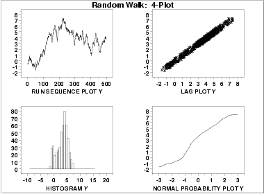
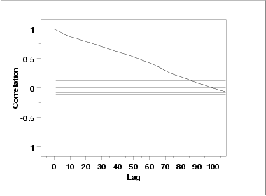
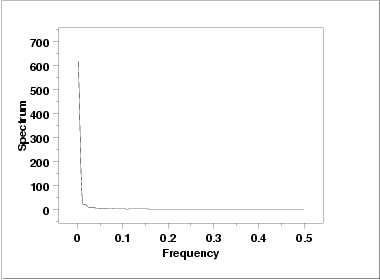

|
1.
Exploratory Data Analysis
1.4. EDA Case Studies 1.4.2. Case Studies 1.4.2.3. Random Walk
|
|||
| Goal |
The goal of this analysis is threefold:
|
||
| 4-Plot of Data |  | ||
| Interpretation |
The assumptions are addressed by the graphics shown above:
When the randomness assumption is seriously violated, a time series model may be appropriate. The lag plot often suggests a reasonable model. For example, in this case the strongly linear appearance of the lag plot suggests a model fitting Yi versus Yi-1 might be appropriate. When the data are non-random, it is helpful to supplement the lag plot with an autocorrelation plot and a spectral plot. Although in this case the lag plot is enough to suggest an appropriate model, we provide the autocorrelation and spectral plots for comparison. |
||
| Autocorrelation Plot |
When the lag plot indicates significant non-randomness, it can be
helpful to follow up with a an
autocorrelation plot.
 This autocorrelation plot shows significant autocorrelation at lags 1 through 100 in a linearly decreasing fashion. |
||
| Spectral Plot |
Another useful plot for non-random data is the
spectral plot.
 This spectral plot shows a single dominant low frequency peak. |
||
| Quantitative Output | Although the 4-plot above clearly shows the violation of the assumptions, we supplement the graphical output with some quantitative measures. | ||
| Summary Statistics |
As a first step in the analysis, common
summary statistics are computed from the data.
Sample size = 500
Mean = 3.216681
Median = 3.612030
Minimum = -1.638390
Maximum = 7.415205
Range = 9.053595
Stan. Dev. = 2.078675
We also computed the
autocorrelation to be
0.987, which is evidence of a very strong autocorrelation.
|
||
| Location |
One way to quantify a change in location over time is to
fit a straight line
to the data using an index variable as the independent
variable in the regression. For our data, we assume
that data are in sequential run order and that the
data were collected at equally spaced time intervals. In our regression,
we use the index variable X = 1, 2, ..., N, where N is the number
of observations. If there is no significant drift in the location
over time, the slope parameter should be zero.
Coefficient Estimate Stan. Error t-Value
B0 1.83351 0.1721 10.650
B1 0.552164E-02 0.5953E-03 9.275
Residual Standard Deviation = 1.9214
Residual Degrees of Freedom = 498
The t-value of the slope
parameter, 9.275, is larger than the critical value of
t0.975,498 = 1.96. Thus, we conclude that the slope is
different from zero at the 0.05 significance level.
|
||
| Variation |
One simple way to detect a change in variation is with a
Bartlett test after dividing the
data set into several equal-sized intervals. However, the Bartlett
test is not robust for non-normality. Since we know this data set is
not approximated well by the normal distribution,
we use the alternative Levene
test. In particular, we use the Levene test based on the median
rather the mean. The choice of the number of intervals is somewhat
arbitrary, although values of four or eight are reasonable. We will divide
our data into four intervals.
H0: σ12 = σ22 = σ32 = σ42
Ha: At least one σi2 is not equal to the others.
Test statistic: W = 10.459
Degrees of freedom: k - 1 = 3
Significance level: α = 0.05
Critical value: Fα,k-1,N-k = 2.623
Critical region: Reject H0 if W > 2.623
In this case, the Levene test indicates that the variances
are significantly different in the four intervals
since the test statistic of 10.459 is greater than the 95 %
critical value of 2.623. Therefore we conclude that the scale
is not constant.
|
||
| Randomness |
Although the lag 1 autocorrelation coefficient above clearly shows the
non-randomness, we show the output from a
runs test as well.
H0: the sequence was produced in a random manner
Ha: the sequence was not produced in a random manner
Test statistic: Z = -20.3239
Significance level: α = 0.05
Critical value: Z1-α/2 = 1.96
Critical region: Reject H0 if |Z| > 1.96
The runs test rejects the null hypothesis that the data were
produced in a random manner at the 0.05 significance level.
|
||
| Distributional Assumptions | Since the quantitative tests show that the assumptions of randomness and constant location and scale are not met, the distributional measures will not be meaningful. Therefore these quantitative tests are omitted. | ||